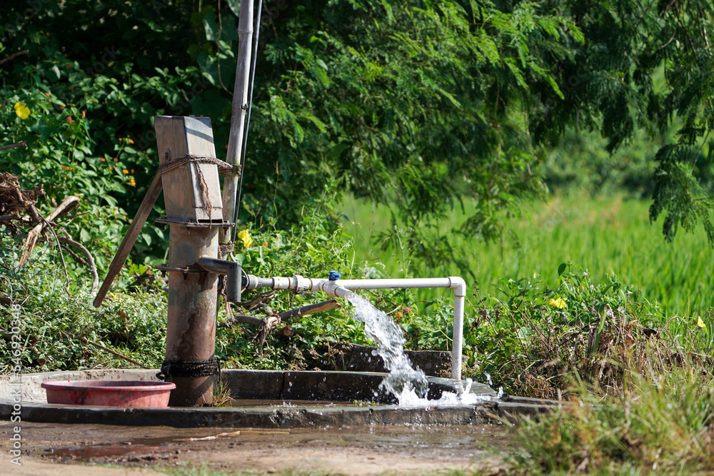

Water wastage refers to the unnecessary or excessive use and mismanagement of water resources, resultingin the depletion and inefficient use of this vital natural resources. It occurs in various sectors, including household, agricultural, industry and municipal systems and it can have severe enviment, economic and social consequence. Water wastage degradation and increased costs for water treatment and supply. This introduction highlights the important of tacking water wastage and the need for effective conservation and management measures.
To conserve precious resources for future generation and ensure sustainable access to clean water. To educate people about water-saving techniques and encourage responsible water consumption.
Explore the various reasons why water is wasted in our daily lives and industries.
(1) Leaky Plumbing: Leaking pipes, faucets, and toilets are one of the primary causes of water wastage in households. A single leaky faucet can waste a significant amount of water over time.
(2) Open Taps: Leaving the tap running while brushing teeth, washing dishes, or doing other chores can lead to substantial water wastage.
(3) Industrial Practices:Industrial processes often require vast amounts of water, and some industries may not have efficient systems in place to recycle or minimize water usage.
(4) Lack of Water Recycling: In some regions, water recycling and reuse are not common practices. Treating and reusing wastewater can help reduce overall water demand.
(5) Climate Change: Changes in climate patterns can lead to prolonged droughts and reduced water availability, causing water wastage to become a more significant problem.
(6) Agriculture: Inefficient irrigation practices in agriculture, like flood irrigation, can lead to significant water wastage. Drip irrigation and other water-efficient techniques can help reduce this.
Being more conservative and sustainable with water usage is the key to making a positive difference to the current water situation that is facing the world. While plenty of people are already taking action, word must be spread about the importance of not wasting water to ensure people start taking action.
There are three main types of sustainability efforts. They come in the form of:
(1) Rules and regulations set by countries
(2) Campaigns to Conserve the Use of Water
(3) Government Initiatives and Schemes
(4) Each sustainability effort will approach this in its own way, but knowing the different efforts out there that you could support is crucial..
(1) Fix Leaks: Regularly check for and repair leaks in faucets, pipes, toilets, and other plumbing fixtures. Even minor leaks can lead to significant water wastage over time.
(2) Collect Rainwater: Set up rain barrels or cisterns to collect rainwater for outdoor use, such as gardening and landscaping.
(3) Individual Responsibility: Encourage individual responsibility and behavior change by making people aware of the consequences of water wastage.
Protecting the environment starts at home. It's extremely important to make active efforts to change your water waste habits. It may seem like an impossible task or a big responsibility when you're viewing the state of the world, but always remember that even the simplest changes you make at home can make a positive difference — and that's just for one person living alone. A family of 4 which develops the same water improvement habits, for example, can make even more of a difference within the same household. It's also important to support other household members, or people you know, in water-saving habits. Always share any information or tips you have, including the ones listed here.
When it comes to the future of the environment on a global scale, the future may appear very bleak in terms of global warming and natural pollution if individuals do not try and make a positive difference today. In terms of water consumption and supply, key predictions for the future can include: A growing world population will significantly increase the demand for water supply. Areas of the world that are already seeing difficulty in freshwater supply may have this situation worsen. An estimated 1.8 billion people will suffer from water shortage in their area by 2025. By 2025, that means two-thirds of the global population will be living in regions of high water stress. The global agriculture market will require another one trillion cubic meters of water annually if the increase in population continues to the estimated one billion more mouths to feed by 2025. The number of nations expected to be water scarce has increased; this is now projected to be 30 nations by 2025, increased by ten since 1990. Global warming will only worsen the water supply situation. If current trends don't see any drastic change, the world will only have 60 percent of its necessary water supply in 2030.
Please contact for any knowlwdge regarding water.